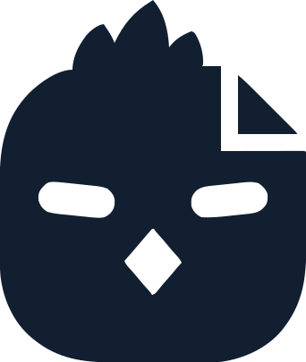

Hierarchy & voice
Three names appear on anything shipped. Each has one place to live.
Named in type
Masthead-left: the chick, then the project's name in the display face. The name is the project's identity; the mark is the maker's.
The chick
Masthead, favicon, avatar, and the footer watermark on every site. One character across every project is what makes the profile feel uniform.
Mohammed Tahir Madni
READMEs, document covers, rel="author". Never in UI chrome.
Plain-spoken and specific. State the outcome and the reason, never the hype. Sentence case everywhere except mono eyebrows and short labels. Every page, document, and deck ends with exactly one next action.
Color
Cobalt is structure. Spice is heat. No new hues, no gradients, flat fills only.
Primitives
Raw ramps. Pages never reference these — they reference the semantic roles below, which pick a step per mode.
Semantic roles — live in the current mode
What each token does, its resolved value right now, and its WCAG contrast against the surfaces it actually sits on. Text pairs need 4.5:1; focus rings, control borders and chart marks need 3:1. Toggle the theme in the masthead to re-check.
Cobalt is structure: surfaces, headings, eyebrows, rules, table headers, the emphasized data series. Spice is heat: links, the primary button, focus rings, the one "look here" moment. Spice never colors body text, headings, or large fills — if everything is spicy, nothing is.
Typography
Bricolage Grotesque for display, Instrument Sans for body and numbers, IBM Plex Mono for labels. The signature is a lowercase mono eyebrow in brand cobalt.
Landed price.
What it costs to put it in your driveway.
Price changes since the last snapshot
Gone from the market
Seventy-four vehicles, two of them within two hundred miles.
The tracker pulls every listing once a day, keeps the cheapest price it saw per vehicle, and flags the ones that moved. Body copy stays near 65 characters wide.
Prices include $1,100 shipping for cars outside the region.
Best value right now
$36,646
WBY33FK08RCS83536 · 2026-08-23 · 17,263 mi
--sc-accent inline, and ⌘ K for keys.
Numbers in tiles and hero figures use Instrument Sans, proportional figures. tabular-nums only in columns that must align. Headings get text-wrap: balance. Labels are lowercase mono with modest tracking — never ALL-CAPS with wide tracking, which is the previous system's tell. The mono stack falls back to Consolas on Windows.
Space, shape, motion
An 8px rhythm, three radii, one shadow, one easing.
Spacing scale
Radii & shadow
Motion: fades and short slides, 240ms, cubic-bezier(.2,.7,.3,1). Hover signals with color, never scale. Base state is the finished state. prefers-reduced-motion sets it to zero. Pointer targets are at least 24px tall.
Widths: prose 800 · content 1120 · wide 1280 (dashboards, tables). See Layout & utilities.
Themes
Dark is the default. Light is a designed mode, not an inversion.
How it resolves
:root carries the dark set. @media (prefers-color-scheme: light) and [data-theme="light"] carry the light set; [data-theme="dark"] pins dark. The hosted sc-theme.js writes data-theme on <html> and remembers it per browser; it runs before paint, so there is no flash, and it prints a pinned-dark page light.
What stays dark in both modes
Masthead, footer, code blocks, tooltips, covers — on --sc-ink. Anything nested in them re-reads the text, brand and accent tokens as on-ink ones; add .sc-on-ink to any other ink-filled block for the same treatment. That shared spine is what makes a light page recognisably the same product as its dark sibling.
Try it
The toggle is a masthead control — it is designed for ink, so the demo sits on one.
Components
Twenty blocks, all prefixed sc-. Reproduce these; don't invent siblings. Blocks marked 2.1 were promoted from the first production consumer, the SpicyCar tracker.
Masthead
Project left (the chick, then the project's name and sub-line in type); endorsement, nav and theme toggle right. Dark in both modes. Nav underline is spice; the nav carries an aria-label.
.sc-masthead · .sc-brand img.sc-mark .sc-brand__name .sc-brand__sub · .sc-masthead__right .sc-sep · .sc-nav · .sc-theme-toggle
Fallback: .sc-brand__mark is a 26px letter tile on --sc-brand-line for a project with no SVG mark yet — — never the chick's replacement.
Title block 2.1
One container for the opening of every page: lowercase mono eyebrow, h1, one-sentence dek, mono meta row, and an optional segmented control that switches the subject. 40px above, 8px below; 24px above on phones.
What it costs to put it in your driveway
Landed price = asking price + $1,100 shipping for out-of-region cars, adjusted $0.30/mi against a 20,000-mile baseline.
.sc-title · .sc-eyebrow (--accent --muted) · h1 · .sc-dek · .sc-meta .sc-sep · .sc-title .sc-tabs
Layout & utilities
The page frame and the small helpers. Widths are the three measures; sections are 48px apart; a stack puts 16px between siblings; a row is a flex line with .sc-right pushing the tail to the edge.
.sc-wrap (--prose --wide) · .sc-section · .sc-grid (--2 --3 --4) · .sc-row .sc-right · .sc-stack · .sc-muted .sc-faint .sc-text-brand .sc-text-good .sc-text-warn .sc-text-danger .sc-text-info · .sc-mono .sc-num · .sc-nowrap .sc-truncate .sc-case
.sc-sr-only hides text visually and keeps it for assistive tech — the caption on every chart's table twin uses it. .sc-hide-sm drops an element under 720px (the masthead's "Living reference" above uses it). hidden works on every component. .sc-text-accent is deprecated in 2.1 — use .sc-chip--spice; it goes in 3.0.
Stat tiles & hero figure
Label · value · context · signed delta against a named period. Direction plus color, never color alone. Exactly one hero figure per view.
.sc-tile .sc-tile__label .sc-tile__value (--sm) .sc-tile__sub · .sc-delta (--good --bad --flat) · .sc-hero
Cards
One discrete idea each. Heading plus hint, optional action on the right. A card head's h2/h3 sits at 20px; the last child loses its bottom margin, so no inline resets.
Listings
One row per VIN, local listing preferred.
Card body. Hairline border, 14px radius, soft shadow.
For nested or secondary surfaces
Sits one step above the page without a heavier shadow.
.sc-card (--raised) · .sc-card__head · .sc-hint · a.sc-card is the linked-card form
Callouts
Tinted fill with the file-fold corner from the mark. Core is the single takeaway — max one per section — and may lead with a figure. Ink is must-remember. Spice is the one next action. Warning adds the 2px danger border.
The cheapest landed car is a 17k-mile 2024 in San Diego — $1,500 under yesterday.
Prices in the CSV are the lowest seen that day per vehicle; the dashboard always shows the local listing over the national copy. Read the method →
Open the San Diego listing and ask for the out-the-door number before Friday. Open the listing →
Two listings under $1,000 were monthly payments, not prices. They are filtered now; confirm any price that looks too good.
.sc-callout (--core --ink --spice --warning) · .sc-callout__label · .sc-callout__figure 2.1
Chips
Squared lowercase mono chips. The word carries the meaning; the tone reinforces it. Danger is the outline form — stop and check. Codes and proper nouns keep their casing with --case.
.sc-chip (--brand --neutral --spice --good --warn --danger --info --solid · --case) 2.1 for --info and --case. In documents the provenance letters K B A Q W can ride on these tones.
Buttons
Primary is spice — one per view (this demo shows two only to compare sizes). Secondary is a cobalt-leaning outline. Ghost for the quiet third option. Pressed states shift the fill toward --sc-hover; nothing scales or filters.
.sc-btn (--primary --secondary --ghost --sm) · [disabled] · a.sc-btn[aria-disabled="true"] drops its href · the ring is :focus-visible on every control — 2px --sc-focus, 2px offset (held still here with a page class).
Filters & inputs
One row, above everything it scopes. Labels are mono eyebrows; controls are 14px Instrument Sans on the card surface with a 3:1 control border. A bare label.sc-check carries the same label type as .sc-field.
.sc-filters · .sc-field · .sc-select · .sc-input (:disabled [aria-invalid="true"] :read-only) · .sc-check
Table
Open header — lowercase mono labels over a 2px cobalt rule, no filled bar — hairline rows, row hover, numbers right-aligned, tabular and non-wrapping. Sortable columns hold a button.sc-table__sort; the arrow is drawn from aria-sort. Secondary lines are .sc-note; the lead value is .sc-figure; row links are quiet.
| Vehicle | Location | History | Trend | |||
|---|---|---|---|---|---|---|
| $36,368▼ $1,500 · 1 cut | 17,263 | $36,646+ $1,100 ship | San Diego, CA National | 1-owner · no accidents | ||
no photo | $41,000new | 9,000 | $37,700local | Naperville, IL Chicago | CPO · 2 owners · 1 accident | |
| $38,698 | 20,224 | $39,865+ $1,100 ship · + $67 mi | Torrance, CA National | 1-owner · history n/a |
.sc-table (--compact) · .sc-table-scroll · th.is-sortable th[aria-sort] .sc-table__sort 2.1 · .sc-num · .sc-figure .sc-note · .sc-link--quiet · th.is-sorted is deprecated (removed in 3.0)
Tall table — sticky header 2.1
The header sticks only inside a bounded, vertically scrolling wrapper. Plain .sc-table-scroll scrolls sideways and never pins anything. Scroll the demo.
| Day | Lowest landed | Median landed | Vehicles |
|---|---|---|---|
| Aug 17 | $37,868 | $46,548 | 68 |
| Aug 18 | $37,868 | $46,600 | 69 |
| Aug 19 | $37,200 | $46,652 | 71 |
| Aug 20 | $37,200 | $46,500 | 72 |
| Aug 21 | $36,900 | $46,480 | 73 |
| Aug 22 | $36,646 | $46,652 | 74 |
| Aug 23 | $36,646 | $46,653 | 74 |
.sc-table-scroll--tall (70vh max; the demo caps it lower) · inside .sc-card--raised the header takes the raised fill
Empty state 2.1
Nothing to show yet — one sentence, no apology, no graphic. The table form spans the row.
No price changes since the previous snapshot.
| Vehicle | Last seen | Last price |
|---|---|---|
| Nothing has left the market yet. | ||
.sc-empty · tr.sc-empty
Frame & media row 2.1
Photos are content: a hairline-bordered 6px frame, 56×40 by default, 120×80 with --lg; object-fit: cover crops any aspect (the avatar tile stands in for a photo here). The empty twin says so in words. A media row puts the frame beside title, sub-line, code and quiet links; on narrow screens a table row becomes the card twin — frame, title, aside first (the grid places them), then sub-line, code and the foot.
.sc-frame (--empty --lg) · .sc-media .sc-media__body .sc-media__title .sc-media__sub .sc-media__code .sc-media__links · .sc-media--card .sc-media__aside .sc-media__foot
Figure, note & quiet link 2.1
Inside a cell or a row: the lead value is bold heading-colored and never wraps; the footnote under it is mono muted. Links in dense tables and media rows are quiet — spice is reserved for the one action and prose links.
.sc-figure · .sc-note · .sc-link--quiet
Chart container & sparkline 2.1
Every chart lives in a focusable host with a name, an aria-hidden SVG, and a table twin below it. Marks wear the .sc-chart__* classes so they follow the tokens; text inside wears text tokens. A sparkline is the same idea at 80×26 — chart tokens for the line, never text tokens. The live charts in Data visualization use exactly this contract. On phones this fixed-width specimen scrolls sideways inside its host.
Table view
| Day | Lowest landed | Median landed |
|---|---|---|
| Aug 22 | $36,646 | $46,652 |
| Aug 23 | $36,646 | $46,653 |
| Vehicle | Landed | Trend |
|---|---|---|
| 2024 eDrive40 | $36,646 | Aug 17 $38,900; Aug 23 $36,646 |
| 2025 eDrive40 | $37,700 | Aug 17 $37,700; Aug 23 $37,700 |
.sc-chart (role="group" tabindex="0" aria-label) · .sc-chart__grid .sc-chart__crosshair .sc-chart__series (--emphasis --context) .sc-chart__marker .sc-chart__label · .sc-spark (--emphasis) .sc-tile__spark · a sparkline's values ride along in .sc-sr-only or the row's details twin
Tooltip, legend, tabs, details
Tooltips sit on ink with values leading and are hidden from assistive tech while off. Legends use line keys for lines and swatches for bars. Tabs are a segmented control — role="group" with aria-pressed — that switches the subject, not the site. Details hide a chart's table twin; the arrow turns when open.
Table view
The chart's values as a table — every chart has one.
Table view, open
The same twin, expanded: the glyph points down.
.sc-tooltip (__date __row __meta, is-on) · .sc-legend (i.is-swatch) · .sc-tabs[role="group"] .sc-tab[aria-pressed] (--case keeps proper-noun casing; aria-selected is still styled for old markup) · .sc-details ([open])
Notice
The stop-and-read block: what failed and what to do. No apology, no vagueness.
This page reads data.json from the same folder, so it needs to be served over HTTP — GitHub Pages, or a local static server from the docs folder.
.sc-notice
Footer & watermark
Source line left; the SpicyChicken watermark right — mono mark, wordmark, 70% opacity, links to the profile. On every page, the same size; the class sets it, so no inline height.
 SpicyChicken
SpicyChicken.sc-foot · .sc-watermark img.sc-mark .sc-watermark__name
Document surface
On-screen prose at 800px with section rules in the brand line. The flat form drops the card for prose straight on the page, with h3 rhythm, a 68ch measure and a table of contents.
How landed price is computed
Asking price, plus shipping when the car is outside the region, adjusted for mileage against a baseline.
Each day the tracker keeps the lowest price it saw per VIN. The adjustment is thirty cents a mile either side of twenty thousand miles — a used-EV rule of thumb, not an appraisal.
Mileage adjustment
Thirty cents a mile either side of a 20,000-mile baseline, so a 10,000-mile car is landed $3,000 higher and a 30,000-mile car $3,000 lower than its asking price suggests.
- Shipping applies outside a 200-mile radius.
- Listings under $20,000 are ignored as payment-not-price errors.
.sc-doc (--flat) · .sc-toc 2.1
Skip link
The first focusable thing on a page: off-screen until focused, then a small card at the top-left. This guide has one — press Tab from the address bar. Shown here in its focused form.
.sc-skip before the masthead, pointing at main#main-content
Data visualization
Five categorical slots in fixed order, a cobalt sequential ramp, an emphasis pair. Adjacent slots pass the colorblind and normal-vision separation checks against the card surface in both modes; all-pairs separation is verified for slots 1–3.
Palettes — live in the current mode
Emphasis line
The series that matters in cobalt, context in gray. Crosshair finds the day; arrow keys step; the table twin carries the values.
Categorical bars
Listings by state, per week. Slots 1–5 in order, ≤24px thick, 4px rounded data-ends, 2px surface gap. Hover or arrow through the weeks.
One y-axis, always. Color follows the entity, never its rank. Status colors are never a series. Legend for two or more series; direct-label selectively. Text wears text tokens, never the series color. Every chart has a table twin. All-pairs forms (scatter, bubble, maps) use slots 1–3 only; lines on slots 4–5 add end-labels or markers.
Points, maps and photo cards
The second fold-back from a production consumer. A datum drawn as a point rather than a line, the map it sits on, the legend key that is also a control, and the card that leads with a picture.
The data dot
One mark, used by both the map and the scatter. Filled and hollow are a second channel beside hue, so a category never rides on colour alone — which is what lets an all-pairs form carry more than three slots honestly.
filled · hollow · called out with .sc-dot-ring · a dashed .sc-scatter__line reference
.sc-dot (.is-filled .is-hollow --link) · .sc-dot-ring · .sc-scatter__line __line-hit __series-label
Legend chips
A legend key that is also a control, in two behaviours. The default hides its series, so pressed-off reads as struck out. --select selects one, so pressed-off must stay fully legible — nothing is hidden, and dimming it would fail contrast for no reason.
.sc-legend__chip (--select) · aria-pressed carries the state, never a class
Map
A projected SVG that pans and zooms. Plain scroll keeps scrolling the page — the embedded-map convention — so the hint teaches the modifier the first time a scroll passes through. Buttons take 44px under a coarse pointer.
.sc-map (--labels) · __btns __btn __scrollhint __state __state-label __radius __anchor
Photo card
A .sc-card is text-first; this one leads with the picture, so it sheds the padding and puts its headline figure on a scrim. The scrim tokens are the one place the system paints over an arbitrary photograph, so they are identical in both modes.

.sc-photo-card · __media __price __price-sub __chip __body · --sc-scrim --sc-on-scrim
The rest of the vocabulary
Everything else 2.3 added, in one place, so no class in the sheet is a class you cannot find.
.sc-filter-bar (.sc-filter-bar__head .sc-filter-bar__toggle .is-open) — the sticky scope controls; wrap a .sc-filters in it and it folds to one tappable row on a phone. .sc-section--support steps a section's card-head h2 down to the dek scale; .sc-section--chapter gives a subject change more air than the stack's own rhythm. .sc-show-more centres a "show all" button under a truncated list. .sc-with-mark sets a heading beside the chick. .sc-lockup is the drawn wordmark, as drawn.
.sc-chart__hit is the invisible full-height rect that gives a hover chart one clean target; .sc-scatter__line-hit does the same for a 1.2px reference line, and .sc-scatter__series-label makes a direct label clickable. In a tooltip: .sc-tooltip__img (a 150×94 thumbnail), .sc-tooltip__link (an on-ink action), .sc-tooltip__dash (the SVG key for a dashed series) and .sc-tooltip--tap, which gives the pointer back so those links work on touch. .sc-frame--photo turns a frame into a loader and .sc-frame__img is the picture inside it. .sc-eyebrow--case keeps codes like IL · OH readable. .sc-text-accent tints one run of text.
A point mark carries a tone slot and a shape, never a tone alone — .is-filled and .is-hollow are what let a map exceed three categories without leaning on hue. Hollow circles need pointer-events to hit-test on the whole disc; fill="none" alone makes the interior untouchable. A legend that hides strikes out; a legend that selects stays legible. The scrim is the only surface in the system where text sits on an unknown background, so it is the only one whose contrast cannot be pre-verified — keep it to a short figure, never body copy.
The mark
The chick — locked August 2026. Wine head, teardrop flame, file-fold corner, cream face. It is the one mark for everything: every project wears it in the masthead and favicon, with the project's name set beside it in type.
The four forms
Sizes
SpicyChickenColor-dark on ink and dark surfaces, color-light on white and cream, mono for the watermark and one-color uses. Files in assets/: four mark SVGs, the avatar tile, lockups (SVG + PNG), favicon set — hosted at spicychicken59.github.io/design-system/assets/. Clear space ≥ the flame's height on all sides. Never recolor, outline, rotate, or add effects.
Mono mark 20px tall + wordmark in the display face at 12px, footer-right, 70% opacity, links to the profile. The masthead shows the color form; the watermark shows the mono form. One chick per surface, always the same sizes.
Pre-ship checklist
Open the style guide beside the page. If something on the page has no equivalent here, it's a new component — fold it in or take it out.
- Head:
color-schememeta, the two font preconnects and the fonts link, thensc.csspinned to a tag via jsDelivr;sc-theme.jsin the head; favicon links point at the hosted assets. - Skip link first, then masthead: the chick + project name left, theme toggle right,
--sc-inkin both modes;.sc-navhas anaria-label. - Title block is
.sc-title: eyebrow, one-plain-sentence h1, one-sentence dek. - Exactly one spice action per view (primary button or next-action callout). At most one core callout per section.
- Page CSS references semantic tokens only — no hex, no primitives, no raw rgba.
- Charts sit in
.sc-charthosts with--sc-chart-*marks; one y-axis; legend for ≥2 series; a table twin under each. - Text never wears a chart or accent color; deltas carry ▲▼; chips carry words; codes take
--case. - Tables: sortable headers hold a button and set
aria-sort; the sticky header only inside--tall; links in rows are quiet. - Screenshotted at 1280 and 390 in dark and light; nothing scrolls sideways; every control is at least 24px tall.
- Footer has the source line and the watermark; favicon is the chick. Page ends with one next action, not a list.
Do / don't
Do
- Lead with a lowercase mono eyebrow.
- Keep the masthead and footer dark in both modes.
- Put the chick in the masthead and the watermark; name the project in type.
- Use Instrument Sans for numbers, proportional figures.
- Separate with hairlines and color, not shadow.
- Write the outcome and the reason.
Don't
- Add a hue or a gradient.
- Use spice for text, headings, or large fills —
.sc-text-accentis on its way out. - ALL-CAPS a tracked label — lowercase mono is the house style.
- Use a display face or tabular figures for a big number.
- Ship an icon set without noting the substitution.
- End with a menu of next steps.
Tag v2.4.0 and pin it from every project — SpicyCar first: https://cdn.jsdelivr.net/gh/spicyChicken59/design-system@v2.4.0/sc.css.